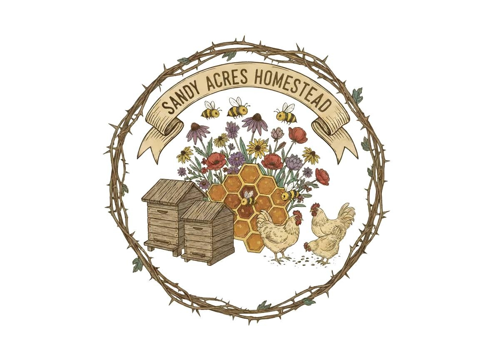

USN Veteran family-owned and operated homestead with backyard apiaries located across Northwest Indiana.
What began as a simple desire to live more intentionally has grown into a way of life that grounds our family. We homestead because it slows us down, reminds us to pay attention, and keeps us connected--to the land, to the seasons, and to each other.
We believe in making things with our hands, caring for the animals entrusted to us, and crafting goods that are honest, time-tested, and nourishing. Every jar of honey, bar of soap, and batch of tallow is made right here at home, one small step in choosing a simpler, more meaningful life.
